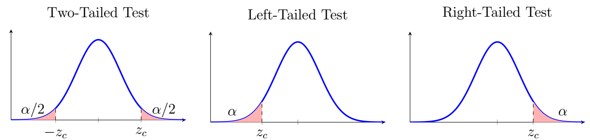
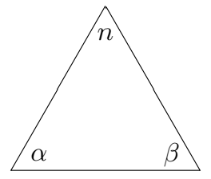

Chapter 9: Hypothesis Testing
Section 9.2: Statistical Tests
Hypothesis testing is a statistical procedure used to determine whether there is sufficient evidence from a sample to support a claim about a population parameter.
Since collecting information from an entire population is usually impractical, decisions are based on random samples.
Generally, hypothesis tests can be classified into three types:
- A two-tailed test determines whether a parameter differs from a specified value.
- A left-tailed test determines whether a parameter is less than a specified value.
- A right-tailed test determines whether a parameter is greater than a specified value.
For a directional claim or a claim involving a difference, the claim is often represented by the alternative hypothesis. However, some claims, such as an equality or status-quo claim, may be represented by the null hypothesis.
Graphically, we can see these three types of tests on the normal or Student's \(t\) curve:



Null and Alternative Hypotheses
A statistical hypothesis is a statement about a population parameter.
Definition: Null Hypothesis
The null hypothesis, denoted by \(H_0\), is the hypothesis tested directly. It commonly represents a specified value, no difference, or no effect. The null hypothesis contains the equality component (\(=\), \(\leq\), or \(\geq\)), while the alternative hypothesis contains the corresponding strict inequality (\(\neq\), \(<\), or \(>\)).
Definition: Alternative Hypothesis
The alternative hypothesis, denoted by \(H_1\), represents the competing claim. It is the complement of the null hypothesis. This text uses \(H_1\); many statistics texts use \(H_a\).
The hypotheses are formulated so that the null and alternative hypotheses are mutually exclusive and collectively exhaustive.
Example 1
A beverage company claims that the average amount of juice in each bottle is 500 mL. Rather than measuring every bottle, a random sample is selected to determine whether the true average differs from 500 mL. State the null and alternative hypotheses. How would they change if the task were to determine whether the true average is less than 500 mL, or greater than 500 mL?
Solution
Since we want to determine whether the true mean differs from 500 mL, this is a two-tailed test:
\[H_0:\mu=500\] \[H_1:\mu\neq500\]If our task were to determine whether the true average was less than 500 mL, we would use a left-tailed test:
\[H_0:\mu\ge500\] \[H_1:\mu<500\]If our task were to determine whether the true average was greater than 500 mL, we would use a right-tailed test:
\[H_0:\mu\le500\] \[H_1:\mu>500\]More examples of research questions and their hypotheses:
| Research Question | Null Hypothesis | Alternative Hypothesis |
|---|---|---|
| Average salary is \$60,000 | \(H_0:\mu=\$60{,}000\) | \(H_1:\mu \neq\$60{,}000\) |
| Defect rate less than 3% | \(H_0:p \geq 0.03\) | \(H_1:p<0.03\) |
| Life expectancy has increased | \(H_0:\mu \leq 78\) | \(H_1:\mu>78\) |
Some texts write every null hypothesis using equality, such as \(H_0:p=0.03\), even for a one-sided alternative. Other texts use the logically complementary null, such as \(H_0:p\geq0.03\). This text uses the latter convention.
Possible Decisions
The Two Possible Decisions
After conducting a hypothesis test, one of two decisions is made.
- Reject \(H_0\)
- Fail to reject \(H_0\)
Failing to reject \(H_0\) does not mean that \(H_0\) has been proved true. It means that the sample does not provide sufficient evidence to reject \(H_0\) at the chosen significance level.
Type I and Type II Errors
Because conclusions are based on sample data, errors are possible.
Definition: Type I Error and Significance Level
A Type I error occurs when a true null hypothesis is rejected. The probability of a Type I error is
\[P(\text{Type I Error})=\alpha\]where \(\alpha\) is called the significance level. The significance level \(\alpha\) is the probability of rejecting \(H_0\) when \(H_0\) is true. Common choices are
\[\alpha=0.10,\qquad \alpha=0.05,\qquad \alpha=0.01.\]A smaller significance level requires stronger evidence before rejecting the null hypothesis.
For example, a medical test incorrectly indicates that a person has a disease.
Definition: Type II Error
A Type II error occurs when a false null hypothesis is not rejected.
\[P(\text{Type II Error})=\beta\]where \(\beta\) is the probability of a Type II error.
For example, a medical test fails to detect a disease that is actually present.
Definition: Power
The power of a statistical test is the probability of correctly rejecting a false null hypothesis.
\[\text{Power}=1-\beta.\]Higher power means that a test is more likely to detect a true effect.
The possible outcomes can be summarized as:
| Reality | Decision | Result |
|---|---|---|
| \(H_0\) True | Reject \(H_0\) | Type I Error |
| \(H_0\) True | Fail to Reject \(H_0\) | Correct |
| \(H_0\) False | Reject \(H_0\) | Correct |
| \(H_0\) False | Fail to Reject \(H_0\) | Type II Error |
Relationship Among \(\alpha\), \(\beta\), and \(n\)
Increasing the significance level \(\alpha\):
- increases the probability of a Type I error,
- decreases the probability of a Type II error,
- increases the power of the test.
Decreasing the significance level:
- decreases the probability of a Type I error,
- increases the probability of a Type II error,
- decreases the power.
Increasing the sample size:
- reduces sampling variability,
- decreases Type II error,
- increases power,
- does not change the chosen significance level.
Basically, we have three components we are interested in, \(\alpha\), \(\beta\), and \(n\). \(\alpha\) and \(\beta\) constitute possible errors which we want to minimize, and \(n\) is sample size, which tends to be expensive in money or effort.

Choosing these three values is a balancing act. The significance level \(\alpha\), sample size \(n\), and the size of the effect being detected all influence statistical power. For a fixed effect size, increasing \(n\) generally increases power. Increasing \(\alpha\) also generally increases power, but it increases the probability of a Type I error. Researchers therefore choose these quantities by considering the consequences of both types of error, the desired power, the effect size of interest, and practical constraints on sample size.